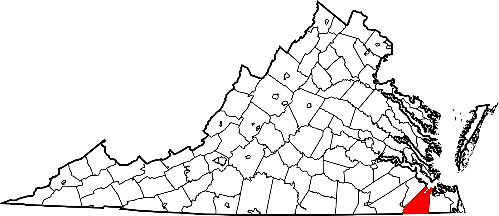

|
Langley Research CenterTurbulence Modeling Resource |
2022 Symposium on
Turbulence Modeling: Roadblocks, and the
Potential for Machine Learning
This in-person symposium was a follow-on to the
UMich/NASA Symposium on Advances in Turbulence Modeling (2017) and
UMich Symposium on Model-Consistent Data-driven Turbulence Modeling (2021).
It was also held in honor of Philippe R. Spalart's contributions to the turbulence modeling field.
Hence, it is sometimes referred to by the moniker "PRS2022".
(This symposium was originally planned to take place in March 2021. However, due to COVID, it had
to be postponed (twice), until Summer 2022.)
LINK TO SYMPOSIUM PRESENTATIONS AND OTHER DETAILS
The symposium was IN-PERSON only, and had two themes:
The goals of the first theme were to discuss turbulence modeling from both academic and industrial perspectives;
new developments in RANS, including advancements enabled by data-driven techniques;
synergies between turbulence theory, traditional modeling, experiments, simulations, and emergent
ideas; limitations and perceived stagnation of turbulence models; and the latest developments in turbulence scale-resolving simulation capabilities.
Some time was also dedicated to the discussion of transition modeling.
The goal of the second theme was to foster shared understanding of the needs of data-driven model developers, traditional CFD developers and
especially end users. Details regarding the Collaborative Testing Challenge can be found below.
Participants could choose to give a presentation on a subject related to the goals of the symposium, to participate in the
Collaborative Testing Challenge, or both. Talks (including presentation material) were required in both cases.
Like the symposium held in Ann Arbor in 2017, this one included several invited speakers, and prioritized adequate time for
formal and informal discussions.
This was an open symposium, with no proprietary information presented.
Keynote Speakers:
RANS-modeling Panel (Philippe Spalart, Boeing - moderator):
Machine-Learning Panel (Karthik Duraisamy, University of Michigan - moderator):
Transition-modeling Panel (Paul Durbin, Iowa State University - moderator):
Symposium Links:
Suffolk VA is served by both the Norfolk International Airport and Newport News/Williamsburg
International Airport (both 30+ minute drive from the venue). Richmond VA is about
1-1.5 hour drive away, and Washington DC is a 3-3.5 hour drive away.
COVID Information:
COVID information for Suffolk and surrounding areas can be found on the
CDC COVID Data Tracker.
The Lighthouse adjusts its room usage and protocols accordingly.
A pre-screening form will be sent to all attendees (to be filled out) when the Lighthouse puts in the
visit requests prior to the Symposium. This form asks health-related
questions, including vaccination status.
Collaborative Testing Challenge for
Data-Driven Turbulence Models
A key part of this symposium is a friendly turbulence model testing challenge, intended to assess the potential of data-driven
improvements to turbulence models.
Note that the term "data-driven" is used loosely. The derivation of any new model being used for
these cases can involve machine learning, the human brain, or both.
Either compressible or incompressible CFD solvers can be used.
The intent here is not to apply standard turbulence models from the literature, but rather to explore capabilities of data-driven
enhancements.
To be a valid entry, the same turbulence model must be applied to each of the following cases (use the same grids employed for
the results shown on the TMR website if possible):
Prior to the event, the participants of the Collaborative Testing Challenge must send in their results.
See Collaborative Testing Challenge Data Forms page.
This is for the possibility of independent analysis by the Symposium organizers either before or
after the event.
At the event, the participants of the Collaborative Testing Challenge will:
Requirement: the turbulence model (equations, neural network, or other) must be completely open, and
participants must, if requested, agree to submit it to the organizers in some appropriate way
(e.g., via equations, subroutine, or whatever makes sense), with the goal of possible implementation by someone
other than the originator of the model.
All correspondence, including specific questions about the symposium should be addressed to: Gary Coleman (gary.n.coleman@nasa.gov)
or Chris Rumsey (c.l.rumsey@nasa.gov).
Return to: Turbulence Modeling Resource Home Page
Recent significant updates: Responsible NASA Official:
Ethan Vogel


08/02/2022 - Added link to Symposium Presentations and Other Details
07/18/2022 - Registration closed
05/10/2022 - Registration open; first attendee list posted
03/13/2022 - added link to Data Forms page
Page Curator:
Clark Pederson
Last Updated: 04/08/2025